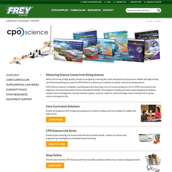
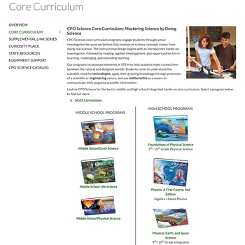
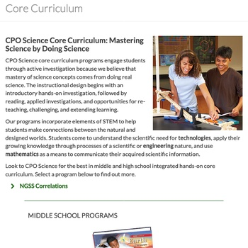
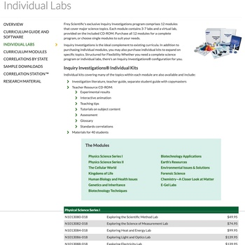

![[Frey Scientific logo]](images/frey.png)
Frey Scientific
2016-2022 | HTML, CSS
Frey Scientific was another website I worked on while I was at School Specialty. The first version I worked on ran on DotNetNuke and was not easy to update the content on.
The second version ran on Kentico, the same CMS that the Delta Education website had moved to in 2015. In fact, the Frey website used many of the same templates, only with shades of green instead of blue. Unlike Delta, however, the Frey site was not doubling as an ecommerce platform; instead, there were links to products on School Specialty's main ecommerce platform. This meant that the Frey website had significantly fewer pages than Delta.
My focus was almost entirely on content, even moreso than on the Delta site; thus, my work consisted of:
- Maintaining existing pages
- Building new pages and sections as needed, many of which required significant CSS work
- Preparing and uploading downloadable content (such as PDFs and Microsoft Word documents)
- Resizing and optimizing images to be added to pages
While the majority of pages on the site are similar to pages on the Delta Education site, there were some that were unique to Frey. A few of those are highlighted below.
CPO Science
CPO Science is another brand at School Specialty, and its website also ran on DotNetNuke prior to 2016 and was difficult to update. At some point earlier that year, the decision was made to make CPO Science part of Frey Scientific. This resulted in CPO Science's website relaunching as a section of the newly-relaunched Frey Scientific website. The consolidation would continue in 2022 when both brands as well as Delta Education would move to sections of School Specialty's own website.
Clicking or tapping on each image will bring up a larger screenshot of the entire page.
{kind=link}

CPO Science overview page on desktop
{kind=link}

CPO Science core curriculum page on desktop
{kind=link}

CPO Science core curriculum page on mobile
Inquiry Investigations
{kind=link}

Inquiry Investigations labs page on desktop